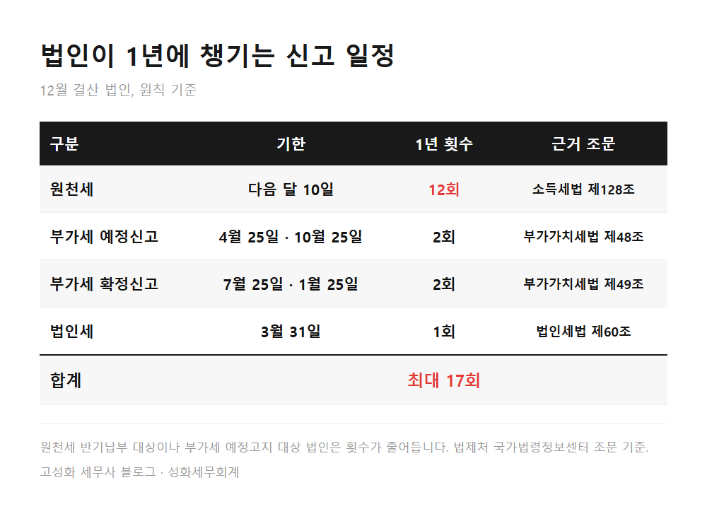
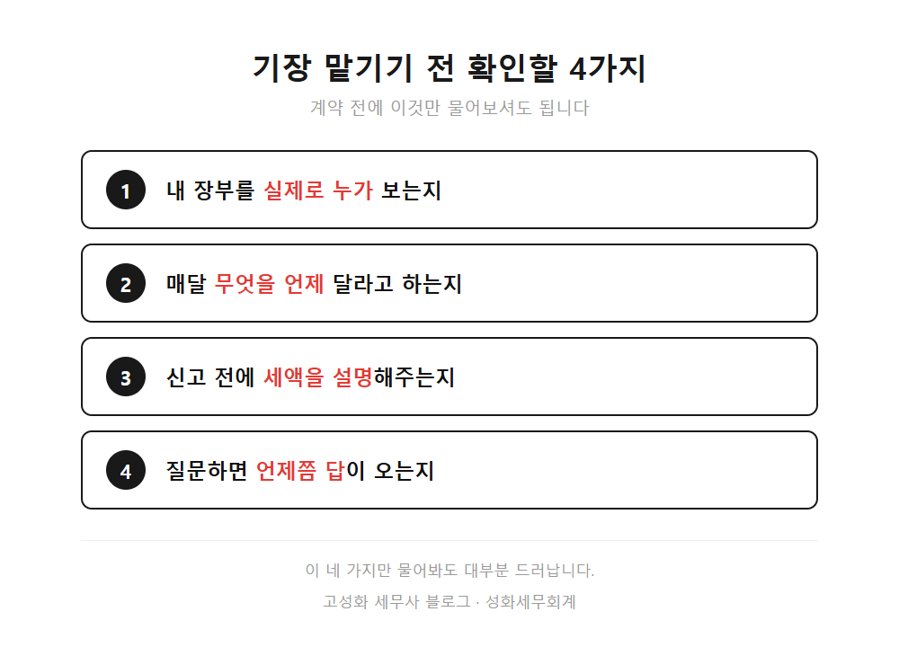
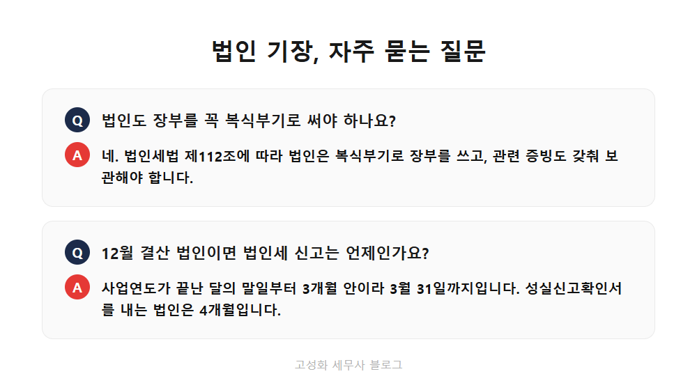

← 세무칼럼 목록
법인·기장

서초 법인 기장대행, 세무사 고를 때 확인할 4가지
법인을 세우고 몇 달 지나면 비슷한 고민을 하시는 대표님이 계십니다. "기장은 맡겨놨는데, 이게 제대로 되고 있는 건지 모르겠어요." 서초에서 법인 대표님들을 만나다 보면 이 말을 생각보다 자주 듣습니다.
이 글을 보고 계신 분은 아마 ① 법인 설립을 앞두고 기장을 어디에 맡길지 알아보고 계시거나, ② 이미 맡겼는데 연락이 뜸해서 불안하시거나, ③ 세무사를 바꿀까 고민 중이신 분일 겁니다. 확인할 건 네 가지면 충분합니다. 그 전에 법인이 1년에 챙겨야 하는 일정부터 보시죠. 이걸 알아야 무엇을 물어봐야 하는지가 보입니다.
이 글에서 다루는 내용
- 법인은 1년 내내 신고가 이어집니다
- 기한은 지켰는데 그 사이가 비어 있는 경우
- 맡기기 전에 확인할 4가지
한눈에 보기



정리하면
법인 기장은 1년에 열 번이 넘는 신고를 끊기지 않게 이어가는 일입니다. 그래서 누가 보는지, 매달 어떻게 챙기는지, 설명을 해주는지가 수수료만큼 중요합니다.
이미 맡기신 곳이 있어서 망설여지실 수도 있습니다. 괜찮습니다. 지금 계신 곳을 바꾸지 않더라도, 올해 신고 내용을 한 번 같이 살펴보는 정도는 부담 없이 하실 수 있어요. 서초에서 법인을 운영하고 계시다면 편하게 문의 주세요.
본문 전체와 근거 조문은 블로그에서 확인하실 수 있습니다.